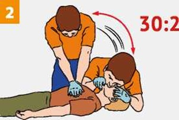

ПЕРВАЯ ПОМОЩЬ ПРИ ТЕПЛОВОМ (СОЛНЕЧНОМ) УДАРЕ
При появлении признаков теплового (солнечного) удара (повышенная температура тела, влажная бледная кожа, головная боль, тошнота и рвота, головокружение, слабость, потеря сознания, судороги, учащенное сердцебиение и дыхание)
Перенеси пострадавшего в прохладное, проветриваемое место (в тень, к открытому окну). |
|

|
При отсутствии признаков жизни приступай к сердечно-легочной реанимации. Вызови (самостоятельно или с помощью окружающих) скорую медицинскую помощь. Проводи сердечно-легочную реанимацию до восстановления самостоятельного дыхания или до прибытия медицинского персонала. |
После восстановления дыхания (или если дыхание было сохранено) придай пострадавшему устойчивое боковое положение. Обеспечь постоянный контроль за дыханием до прибытия скорой медицинской помощи! |
|
Положи на голову, шею и паховую область, смоченные в холодной воде полотенца (салфетки). |
|
При судорогах удерживай голову и туловище пострадавшего, оберегая от травм. |
|
При восстановлении сознания напои пострадавшего прохладной водой. |
Источник:
http://www.culture.mchs.gov.ru/medical/algorithms_of_first_aid_in_acute_and_urgent_conditions/first_aid_for_heat_sun_stroke/
ТЕЛЕФОН СЛУЖБЫ СПАСЕНИЯ: 112